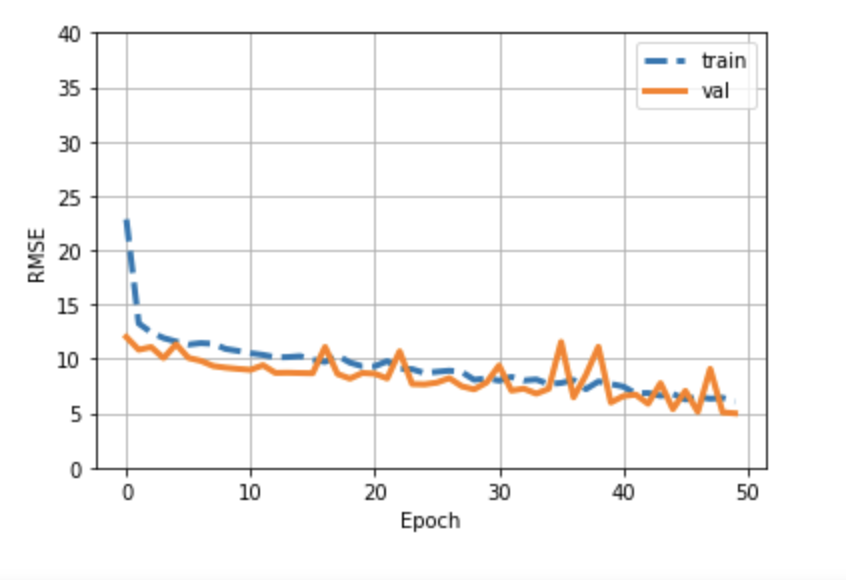
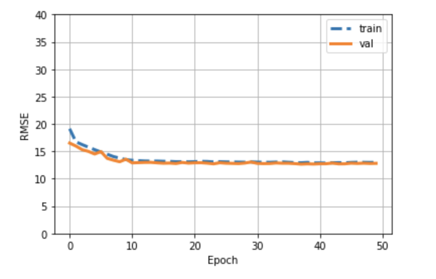

Split data into train and test data
1. Split train data into train and validation sets
Modelling
1. Multi-Layer Perceptron with a couple of hidden layers and one output layer
Predicting key points for test images
To understand how well the model is performing metrics like RMSE(Root Mean Square Error) can be used to
understand the extent of prediction of key points.
Experiments
Datasets
Data is taken from Facial Key points Detection kaggle challenge. The data mainly consists of face images and
coordinates of tips of eyes, eyebrow, nose and mouth in a .csv file.
Experiments
In this project, we would experiment with data preprocessing like handling missing NaN values, treating pixel
strings and visualisation of data. For the data augmentation, we plan to explore Linear Contrast and gaussian
blurring, Scaling and rotating images and horizontal flip of the images. As a part of modelling, to get the basic
idea of perceptron, we intend to use Multi-Layer Perceptron with a couple of hidden layers and one output layer,
also a CNN inception model. RMSE can be used as a metric to understand the prediction of key point coordinates on
the images.
Qualitative results
To understand how well the model is performing metrics like RMSE(Root Mean Square Error) can be used to understand
the extent of prediction of key points.


Conclusion
This report has described a convolutional neural network approach to facial keypoints detection. Most of the
features
have around 40% of the values missing. Thus, missing values are imputed with a mean of the feature as each feature's
data follows a nearly normal distribution. To understand the relationship between features, we have plotted the
features. As we can observe from the correlation matrix, features are not correlated; therefore, we used all the
features for training the model. We trained the model with provided data and observed similar training and test
errors. To address this issue, we have done data augmentation like horizontal flip, rotation of image by 15 degrees
clockwise and anti-clockwise and trained the model with this data along with original data. There was a reduction in
training and validation errors, indicating that neural work learned the patterns better with more data.
This project has a potential for improvement in the areas of model selection, data augmentation, and
experimenting
with hyperparameters. This project can be further extended to analyzing facial expressions, detecting dysmorphic
facial signs for medical diagnosis, unlocking mobile phones, and many others.
References
-
Saptashwa Bhattacharyya. 2021.Facial Keypoints Detection: Image and Keypoints Augmentation.
(May
2001). Retrieved from
https://towardsdatascience.com/facial-keypoints-detection-image-and-keypoints-augmentation-6c2ea824a59
-
Nithiroj Tripatarasit. 2019.Facial Keypoints Detection with PyTorch. (May 2019). Retrieved
from
https://medium.com/diving-in-deep/facial-keypoints-detection-with-pytorch-86bac79141e4
-
Naimish Agarwal, Artus Krohn-Grimberghe, Ranjana Vyas. 2017. Facial Key Points Detection using
Deep Convolutional Neural Network. arXiv:1710.00977. Retrieved from https://arxiv.org/pdf/1710.00977.pdf
-
Kaggle. 2020. Retrieved from
https://www.kaggle.com/balraj98/data-augmentation-for-facial-keypoint-detection